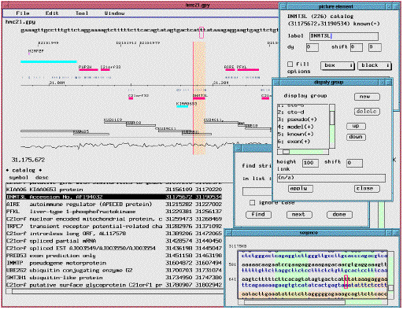

GUPPY is a program to visualize sequence annotation data of the genetic sequence data with graphical layout. This highly interactive program allows smooth scrolling and zooming from the genomic landscape to discrete nucleic acid sequences. Its main function is quick rendering of data on a standalone personal computer to save the layout as a parsonal file. With optional link to the internet resources, and printing support, this program tries to make more greater use of computational media in research actitiviy.

The sequence map of human chromosome 21th
Reference: Hattroi, M. et.al., The chromosome 21 mapping and sequenncing consortium, The DNA sequence of human chromosome 21. Nature, 405:311-319, 2000.
Data are obtained from DDBJ : Imanishi T, Okayama T, Kawanishi Y, Shigemoto Y, Mashima J, Sugawara H, Miyazaki S, Naitou K, and Gojobori T., DDBJ/CIB Human Genomics Studio, 2000. http://studio.nig.ac.jp/
The database system for the genetic sequence database has been developed in different ways. Therefore comparisons with different kind of data and in-house experimental data are not a trivial task. In GUPPY, we employed a programming language for the use in data conversion tasks as well as arrangement of sequence map. Considering nessesary functions for the data processig language, we have chosen Lua among currently available solid languages. The hierarchical data contents of genetic annotation are facilitated by Lua language. In addition, the scripting facility which allows automation of various tasks and description of procedure was totaly supported by Lua language. High speed rendering code was written by ANSI C to maximize performance.
Lua was designed and implemented at TeCGraf, the Computer Graphics Technology Group of PUC-Rio (the Pontifical Catholic University of Rio de Janeiro in Brazil). The source code of Lua language is available at http://www.lua.org. We have translated some of documents: lua Japanese docs
How to use
Currently, this program is a prototype used in research laboratory without full documents and support like a comercial product. Therefore, using GUPPY requires knowlege to C language and UNIX operating systems. We are prepairing a GUPPY academic license to use this software without fee for non-comercial purpose. There are download page and example pages to demonstrates how current implementation works. It might lacks some of nessesary functionalitiles for computational tasks iof individual research fields. Anway, we welcome you to evaluate this release. If application to your research project would require more refinements and programming, please let us know and we consider improvement and more development.
Copyright (c) 2003 National Institute of Advanced Industrial Science and Technology (AIST)
GUPPY was developed in AIST, a national research institute of Japan, which reserves copyright of this software.